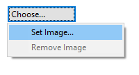

In Canvas Views, you can drag and drop Image files from the desktop to the Canvas.
In Canvas Views, you can drag and drop Image files from the desktop to the Canvas.ArchiMate objects, Canvas Blocks, Image objects and Stickies can contain images. The images in Blocks and Stickies are icons and are resized to a maximum width and height of 100 pixels. Images can be any size but we suggest that you keep them reasonably small so as not to consume too many resources.
To add an image to one of these objects, open the Properties window and select the object. Double-clicking the object will also open the Properties window. Find the Image tab in the Properties window and select the Image Chooser with the "Image Choose..." button:
Selecting the Image Chooser from the Properties window
Note - In order to set an image for an ArchiMate object you must first ensure that "Custom " is selected in the Image source dropdown.
This will open the "My Images" Image Chooser dialog window:

The Image Chooser dialog window
All images that are contained in any loaded models are displayed in the Chooser so that you can re-use them. If you wish to open an image file from your computer select the "Open from File..." option.
In Canvas Views, you can drag and drop Image files from the desktop to the Canvas.
Archi uses a different file format for "*.archimate" files when adding images.
Normally Archi saves "*.archimate" files as single plain text XML format files. However, when images are used the file format used is a binary archive file (zip format) that contains both the model's XML file and the image files. This is to keep all related files together.
Removing an image from an object
To remove an image from an object select the "Remove Image" option from the Image Chooser.